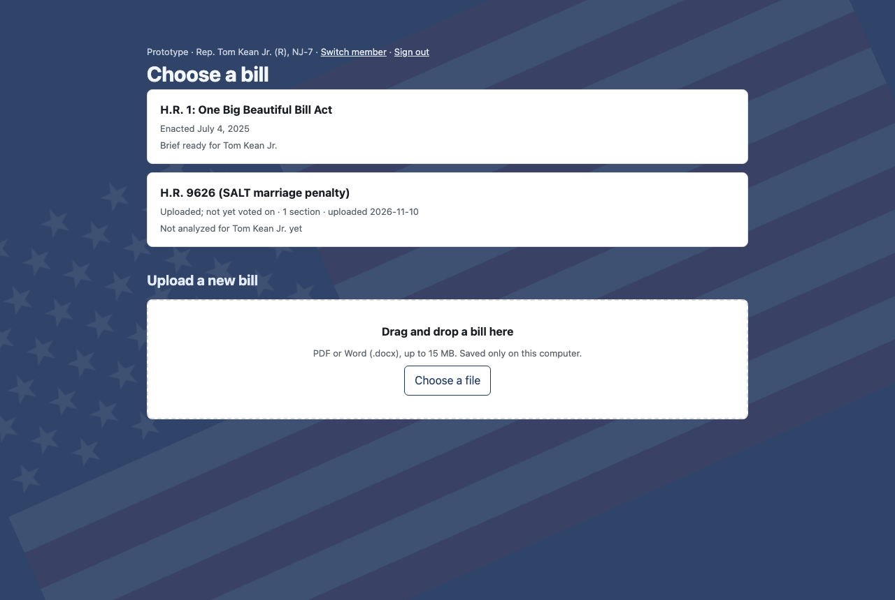
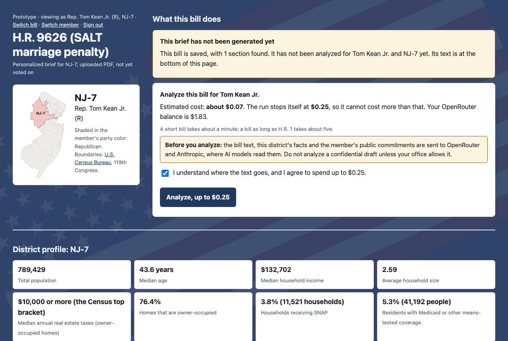
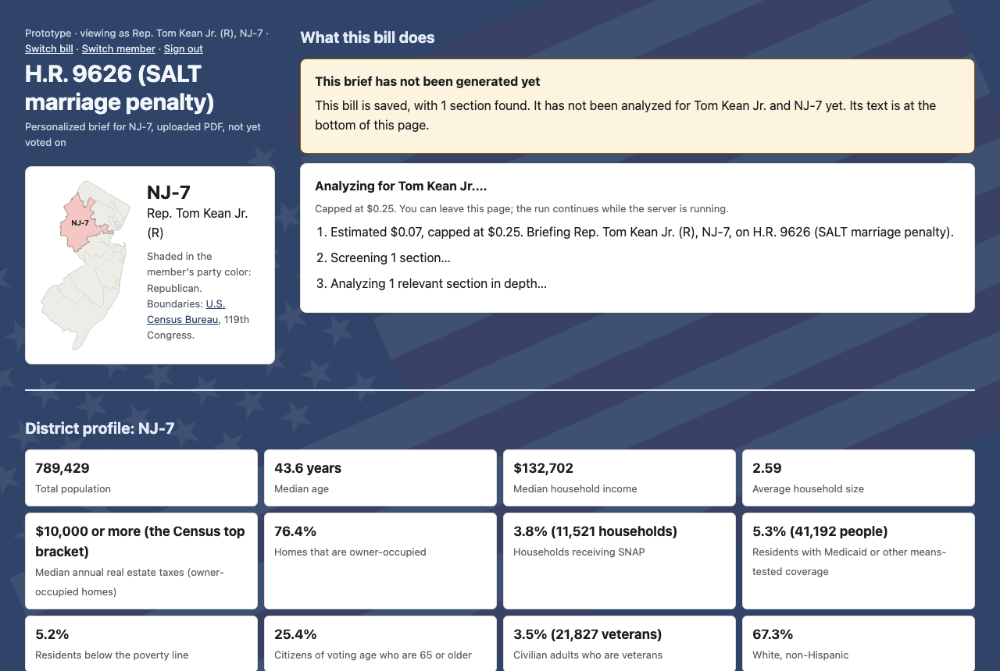
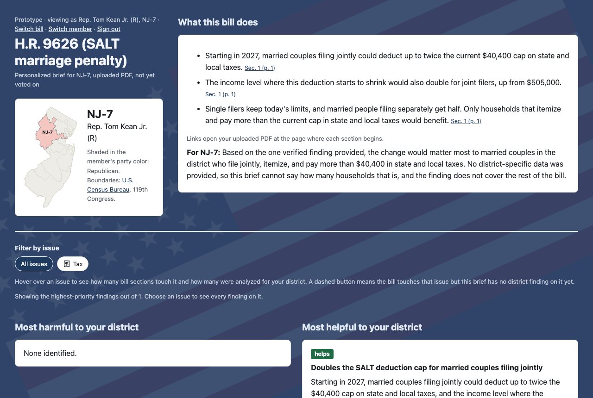
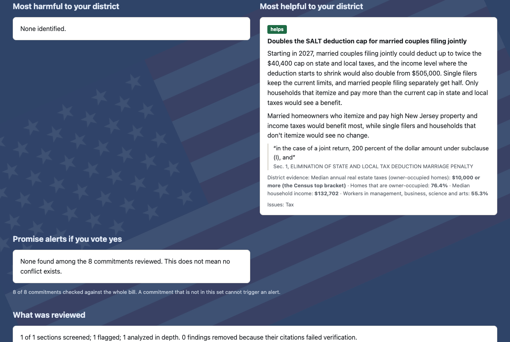
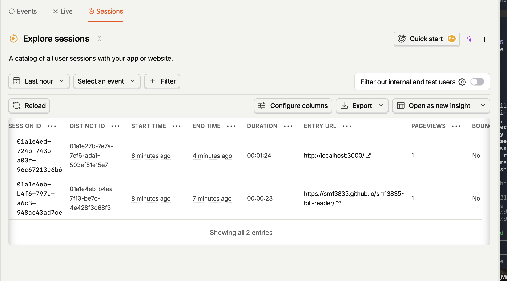
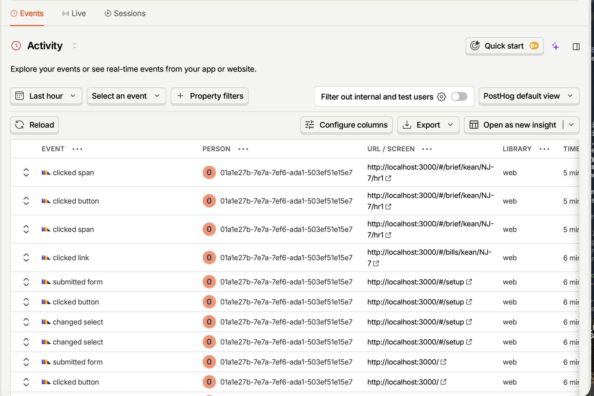
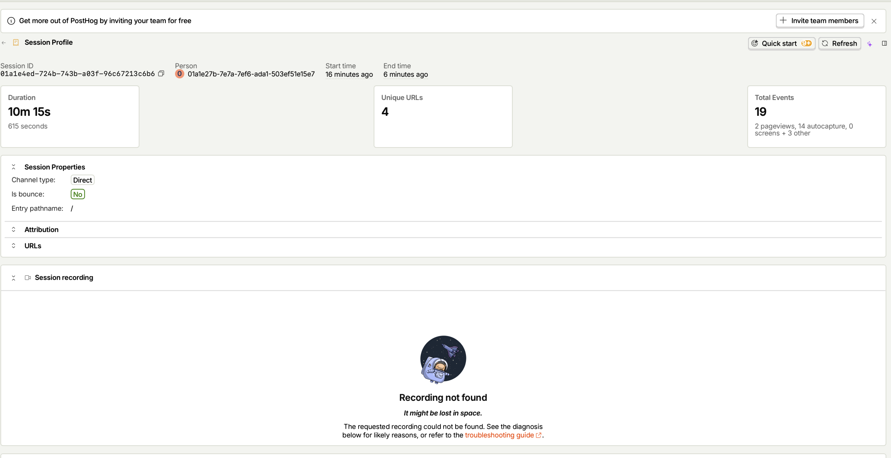

For members of Congress and their staff: a plain-English brief on any long bill, showing what helps or hurts their district and where a yes vote would conflict with a public commitment.
Current Status: Build 2 local app covering all 12 New Jersey House members of the 119th Congress, H.R. 1 and any bill a user uploads. An independent student project, not affiliated with or endorsed by any member of Congress or their office.
Demo: One full user action on my laptop, with a real AI call: analyzing a newly uploaded bill for Rep. Tom Kean Jr. (NJ-7). The bill is H.R. 9626, a public bill introduced July 9, 2026 that doubles the SALT deduction cap for married couples. Screenshots taken November 16, 2026. A live cloud app comes in Build 5.





Who is this for? Members of the U.S. House and their legislative staff. The app now covers all 12 New Jersey House districts of the 119th Congress. No congressional office has tested it yet.
The painful "Before" workflow: Bills can run to thousands of pages and often reach the floor with little time to read them. Members rely on staff memos and party summaries, and someone has to work out by hand how each provision lands in the district and whether it matches what the member has said publicly.
The "After" workflow with this product: The member opens one brief that explains the bill without jargon, ranks the provisions most helpful and most harmful to their district with evidence, and flags any conflict with a public commitment, quoting both the commitment and the bill text.
Riskiest Assumption: That promise alerts can be accurate enough to trust. A false alarm costs the member's confidence, and a missed conflict is worse, so the brief never claims there are no conflicts, only that none were found among the commitments reviewed.
How Build 2 tests it: Build 1 had one member, and all 8 of his commitments raised an alert, so there was no way to tell a real conflict from an oversensitive model. Build 2 runs the same pipeline on more cases where the right answer is clear:
What this means: The safeguards hold, but one wrong alert on a member's own bill is the kind of mistake that loses a staffer's trust. Build 4 (Track A) will score alerts against 10 hand-checked cases before the model's judgment is trusted.
How the app works:
Simple Architecture: Browser (plain HTML) → local Node server (app/server.js) → OpenRouter API (Claude Haiku, then Claude Sonnet) → code checks every quote and citation → brief saved as a JSON file → shown in the browser. The OpenRouter key stays on the server in a Git-ignored .env file.
PostHog is installed on this Product Page and on the local app. These screenshots from November 16, 2026 show my own test visits; no outside users yet.

localhost:3000) and one on this Product Page (github.io). Session replay is on for both.

.env file that Git ignores, and never in the chat or the code. My first real run taught me that a confident-looking AI output can hide a big gap: it hit a rate limit and left out Medicaid, the most important issue for this member, and the summary didn't mention it. So I had the AI's quotes checked by plain code, and the brief now states what it didn't cover. I also learned to set hard spending limits before running paid models. I really enjoyed the fun interface of the Terminus game - I am a Sci Fi person so this was an enjoyable way for me to get through what is an otherwise difficult subject for me to learn (coding in general).package.json, so I installed the snippet by hand. Still open: one brief's district summary wrongly said no district data was provided, even though its finding cited NJ-7 data, and 109 of Rep. Kean's flagged H.R. 1 sections were not analyzed in depth. The PRD now covers 12 districts and uploads, and the riskiest assumption has its first evidence.